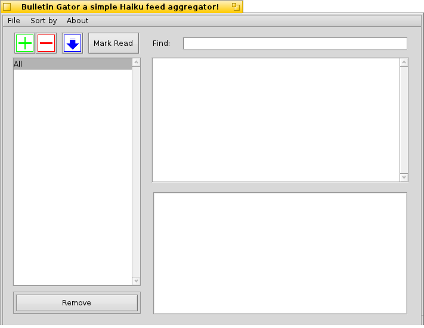

Topics
|
How to remove feedsto remove a feed you can choose one of these 2 methods:

so, after selecting the newspaper
you wanna remove press the Remove button and then a window will ask you
what to do with the relative news, you can delete them or keep them but
they will be available only by selecting "All" in the newspaper list
|